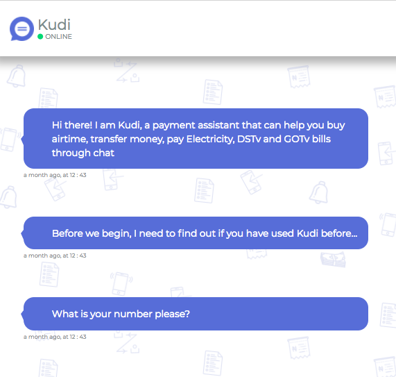

Kudi Bot
Designing a chatbot for financial services

Summary
Kudi bot is one of the products offered by Kudi Inc (YC '17). Kudi Inc is a fintech company in Lagos, Nigeria that provides financial services to unbanked people across Africa.
The challenge
The challenge of this project was to design a financial service, where people could transfer money through chat, buy airtime vouchers and pay their bills. It was the first of its kind in Nigeria - to offer financial service via a chatbot.
Role
Interaction designer & UX writer
Period
June 2016 - September 2017
Target audience
The target audience for this product were Nigerians between the ages of 16 - 45, who were conversant with apps such as whatsapp and own a bank account.
Constraints
For a delicate industry such as finance service, experimenting with a budding technology like natural language processing, artificial intellgence and chatbot resulted in a number of constraints that ranged from technology to security concerns. And of course, being a startup company, there was the budget and time constraint. How these constraints were met and tackled are further discussed in the process below.

To design this solution, I went through a series of steps to get the job done:
A major insight gained during one of our testing is the realisation that users were hesitant to add their card or account details at the beginning of their interaction with the bot. We had assumed that that should be the way the onboarding process should be, but this only resulted in drop-off. Users wanted to get to know the bot before they could commit. So we iterated to allow users to have as much small talk with the bot as they want and they onld added their card or account details when they were ready to perform a transaction.
Kudi bot is still being used by thousands of people daily to perform transactions. The bot was deployed on many messaging apps such as Telegram, Facebook, Skype, Slack, it also has a dedicated app of its own.
Next Project
Digitalizing Siegwerk PMC processes